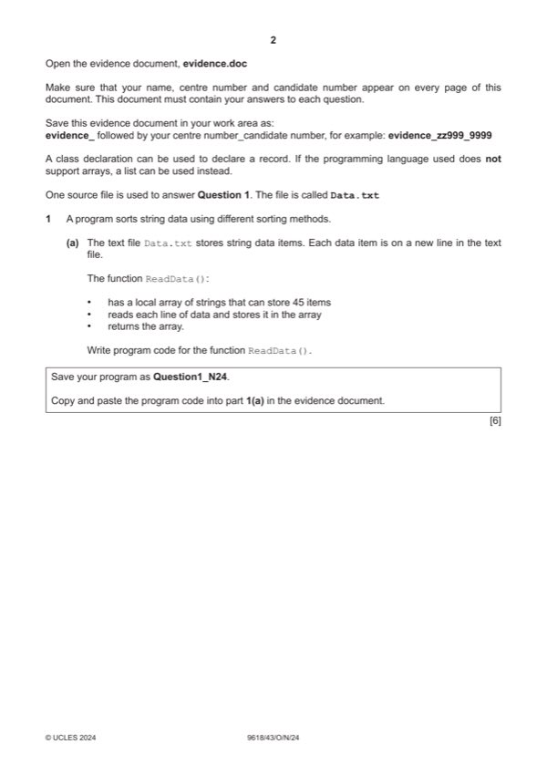

Question 1

Original paper page 2
Part 1(a) — solution
- Function declaration (and close where appropriate)
- Declaration/use of an array (with space/initialised with 45 spaces/strings)
- Opening the file Data.txt for read and closing in an appropriate place
- Looping through all file contents/Looping 45 times and reading each line …
- … storing all items from file into array
- Returning the populated array
- Exception handling with suitable try, catch and output
Visual Basic (VB.NET)
Function ReadData()
Dim TextFile As String = "Data.txt"
Dim Colours(45) As String
Try
Dim FileReader As New System.IO.StreamReader(TextFile)
For x = 0 To 45
Colours(x) = FileReader.ReadLine()
University Press & Assessment 2024 Page 4 of 37
9618/43 Cambridge International AS & A Level – Mark Scheme October/November 2024
Python
def ReadData():
Colours = []
try:
File = open("Data.txt")
Colours = File.read().split("\n")
File.close()
return Colours
except:
print("No file found")
Mark points
- Function declaration (and close where appropriate)
- Declaration/use of an array (with space/initialised with 45 spaces/strings)
- Opening the file Data.txt for read and closing in an appropriate place
- Looping through all file contents/Looping 45 times and reading each line …
- … storing all items from file into array
- Returning the populated array
- Exception handling with suitable try, catch and output
Part 1(a) — solution
Next
FileReader.Close()
Catch ex As Exception
Console.WriteLine("No file found")
End Try
Return Colours
End Function
Mark points
- Include the ideas shown in the solution above.
Part 1(b)(i) — solution
- Function header (and end where appropriate) taking (min) one parameter
- Looping through each parameter array element, concatenating with space and returning
Visual Basic (VB.NET)
Function FormatArray(DataArray)
Dim OutputText As String = ""
For X = 0 To 44
OutputText = OutputText & DataArray(X) & " "
Next
Return OutputText
End Function
Python
def FormatArray(DataArray):
OutputText = ""
for x in range(0, 45):
OutputText = OutputText + DataArray[x] + " "
return OutputText
Mark points
- Function header (and end where appropriate) taking (min) one parameter
- Looping through each parameter array element, concatenating with space and returning
Part 1(b)(ii) — solution
- Calling ReadData() and storing returned array …
- … calling FormatArray() with returned array
- Outputting return value from FormatArray()
Visual Basic (VB.NET)
Dim Colours(45) As String
Colours = ReadData()
Console.WriteLine(FormatArray(Colours))
Python
Colours = ReadData() #string array
print(FormatArray(Colours))
Mark points
- Calling ReadData() and storing returned array …
- … calling FormatArray() with returned array
- Outputting return value from FormatArray()
Part 1(b)(iii) — solution
1 mark for output showing all colours in one string 1
e.g.
University Press & Assessment 2024 Page 7 of 37
9618/43 Cambridge International AS & A Level – Mark Scheme October/November 2024
Mark points
- Include the ideas shown in the solution above.
Part 1(c) — solution
- Function header (and close where appropriate) taking (min) two parameters and returns a value in all cases
- Looping through each character in each string parameter …
- … return 1 when first parameter second
- … return 2 when first parameter second
Visual Basic (VB.NET)
Function CompareStrings(FirstS, SecondS)
Dim Count As Integer = 1
While (True)
If Mid(FirstS, Count, 1) < Mid(SecondS, Count, 1) Then
Return 1
ElseIf Mid(FirstS, Count, 1) > Mid(SecondS, Count, 1) Then
Return 2
Else
Count = Count + 1
End If
End While
End Function
University Press & Assessment 2024 Page 8 of 37
9618/43 Cambridge International AS & A Level – Mark Scheme October/November 2024
Python
def CompareStrings(First, Second):
Count = 0
while True:
if First[Count] < Second[Count]:
return 1
elif First[Count] > Second[Count]:
return 2
else:
Count = Count + 1
Mark points
- Function header (and close where appropriate) taking (min) two parameters and returns a value in all cases
- Looping through each character in each string parameter …
- … return 1 when first parameter second
- … return 2 when first parameter second
Part 1(c) — solution
Mark points
- Include the ideas shown in the solution above.
Part 1(d)(i) — solution
- Bubble sort function header taking array parameter and returns sorted array in all cases
- Comparing strings using CompareStrings() and correctly swapping values when needed
- Correct bubble sort that sorts the data correctly
Python
def Bubble(DataArray):
ArrayLength = len(DataArray)
for x in range(ArrayLength - 1):
for y in range(0, ArrayLength - x - 1):
Result = CompareStrings(DataArray[y], DataArray[y + 1])
if Result == 2:
DataArray[y], DataArray[y+1] = DataArray[y+1], DataArray[y]
return DataArray
University Press & Assessment 2024 Page 9 of 37
9618/43 Cambridge International AS & A Level – Mark Scheme October/November 2024
Mark points
- Bubble sort function header taking array parameter and returns sorted array in all cases
- Comparing strings using CompareStrings() and correctly swapping values when needed
- Correct bubble sort that sorts the data correctly
Part 1(d)(i) — solution
- Dim ArrayLength As Integer = 45
- For X = 0 To ArrayLength - 1
- For Y = 0 To ArrayLength - X - 2
- Result = CompareStrings(DataArray(Y), DataArray(Y + 1))
- If Result = 2 Then
- Temp = DataArray(Y)
- DataArray(Y) = DataArray(Y + 1)
- DataArray(Y + 1) = Temp
Visual Basic (VB.NET)
Function Bubble(DataArray)
Dim ArrayLength As Integer = 45
Dim Result As Integer
Dim Temp As String
For X = 0 To ArrayLength - 1
For Y = 0 To ArrayLength - X - 2
Result = CompareStrings(DataArray(Y), DataArray(Y + 1))
If Result = 2 Then
Temp = DataArray(Y)
DataArray(Y) = DataArray(Y + 1)
DataArray(Y + 1) = Temp
End If
Next
Next
Return DataArray
End Function
Mark points
- Dim ArrayLength As Integer = 45
- For X = 0 To ArrayLength - 1
- For Y = 0 To ArrayLength - X - 2
- Result = CompareStrings(DataArray(Y), DataArray(Y + 1))
- If Result = 2 Then
- Temp = DataArray(Y)
- DataArray(Y) = DataArray(Y + 1)
- DataArray(Y + 1) = Temp
Part 1(d)(i) — solution
- if (Result == 2){
- Temp = DataArray[Y];
- DataArray[Y] = DataArray[Y+1];
- DataArray[Y+1] = Temp;
Mark points
- if (Result == 2){
- Temp = DataArray[Y];
- DataArray[Y] = DataArray[Y+1];
- DataArray[Y+1] = Temp;
Part 1(d)(ii) — solution
- Calling Bubble() with array as parameter and using/storing return value
- Calling FormatArray() with return value from Bubble() and outputting return value
Visual Basic (VB.NET)
Dim BubbleSorted(45) As String
BubbleSorted = Bubble(Colours)
Console.WriteLine(FormatArray(BubbleSorted))
Python
BubbleSorted = Bubble(Colours)
print(FormatArray(BubbleSorted))
Mark points
- Calling Bubble() with array as parameter and using/storing return value
- Calling FormatArray() with return value from Bubble() and outputting return value
Part 1(d)(iii) — solution
1 mark for sorted data 1
e.g.
University Press & Assessment 2024 Page 11 of 37
9618/43 Cambridge International AS & A Level – Mark Scheme October/November 2024
Mark points
- Include the ideas shown in the solution above.